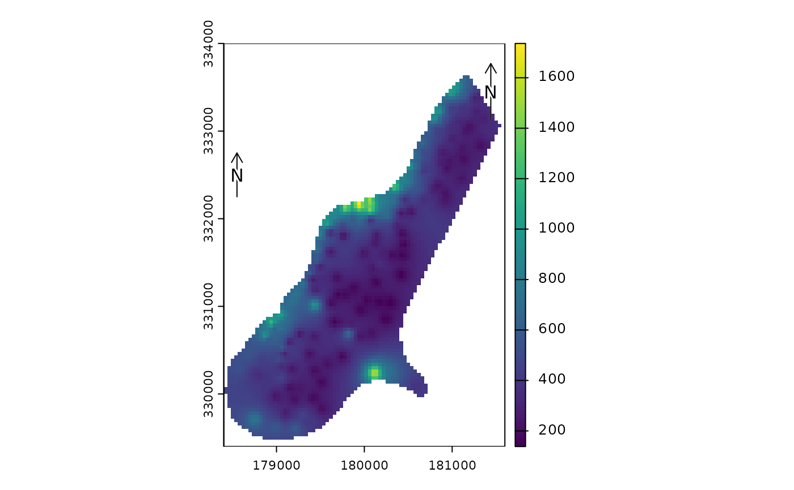

north.RdAdd a (North) arrow to a map
north(xy=NULL, type=1, label="N", angle=0, d, head=0.1, xpd=TRUE, ...)
arrow(...)numeric. x and y coordinate to place the arrow. It can also be one of following character values: "bottomleft", "bottom", "bottomright", topleft", "top", "topright", "left", "right", or NULL
integer between 1 and 12, or a character (unicode) representation of a right pointing arrow such as "\u27A9"
character, to be printed near the arrow
numeric. The angle of the arrow in degrees
numeric. Distance covered by the arrow in plot coordinates. Only applies to type=1
numeric. The size of the arrow "head", for type=1
logical. If TRUE, the scale bar or arrow can be outside the plot area
graphical arguments to be passed to other methods
none
f <- system.file("ex/meuse.tif", package="terra")
r <- rast(f)
plot(r)
north()
north(c(178550, 332500), d=250)

if (FALSE) {
f <- system.file("ex/elev.tif", package="terra")
r <- rast(f)
plot(r, type="interval")
sbar(15, c(6.3, 50), type="bar", below="km", label=c(0,7.5,15), cex=.8)
north(type=3, cex=.8)
north(xy=c(6.7, 49.9), type=2, angle=45, label="NE")
north(xy=c(6.6, 49.7), type=5, cex=1.25)
north(xy=c(5.5, 49.6), type=9)
north(d=.05, xy=c(5.5, 50), angle=180, label="S", lwd=2, col="blue")
## all arrows
r <- rast(res=10)
values(r) <- 1
plot(r, col="white", axes=FALSE, legend=FALSE, mar=c(0,0,0,0), reset=TRUE)
for (i in 1:12) {
x = -200+i*30
north(xy=cbind(x,30), type=i)
text(x, -20, i, xpd=TRUE)
}
}